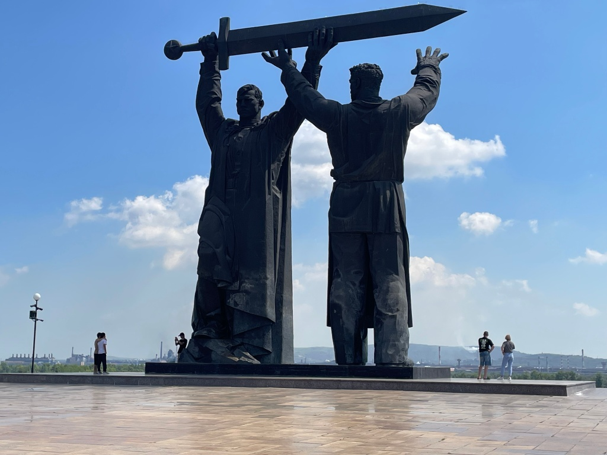
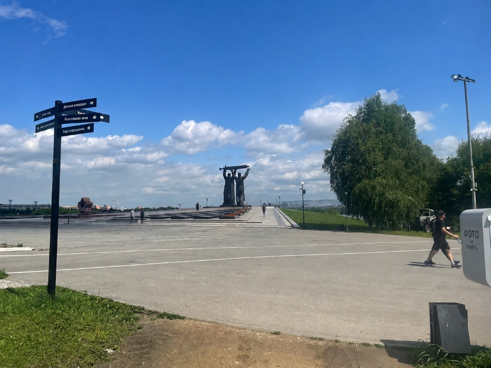
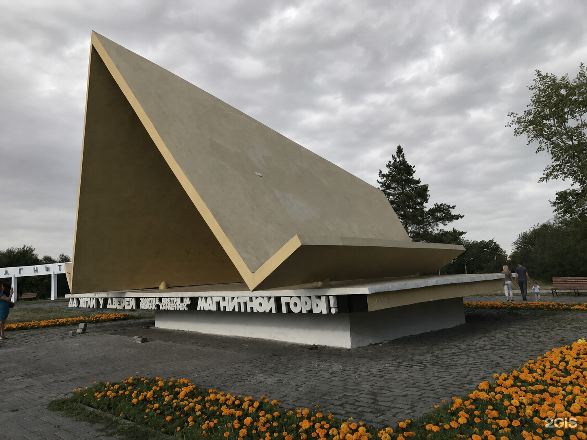
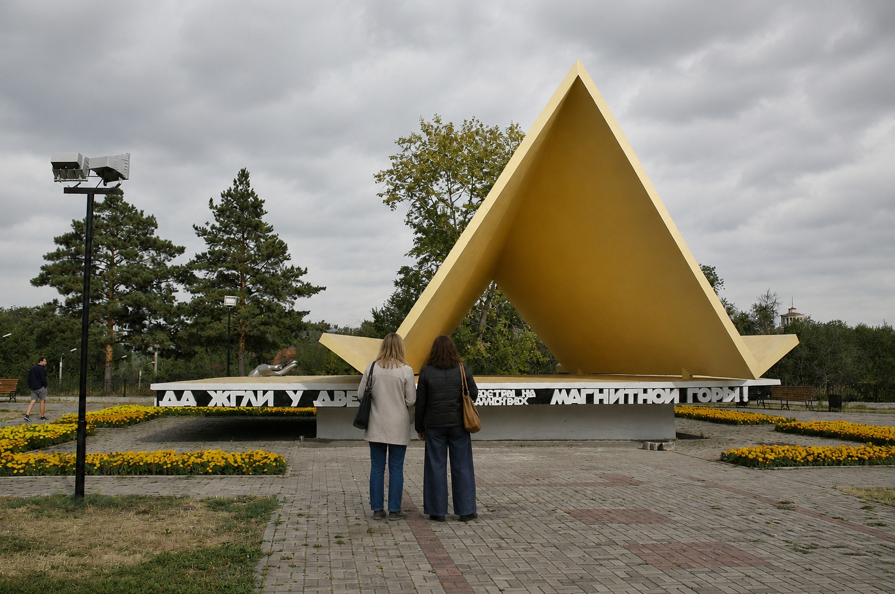
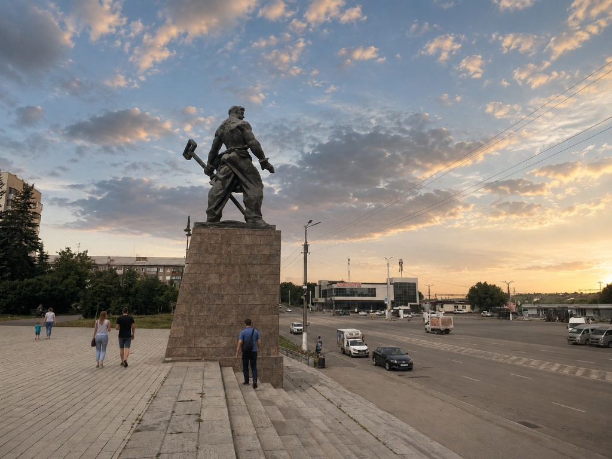
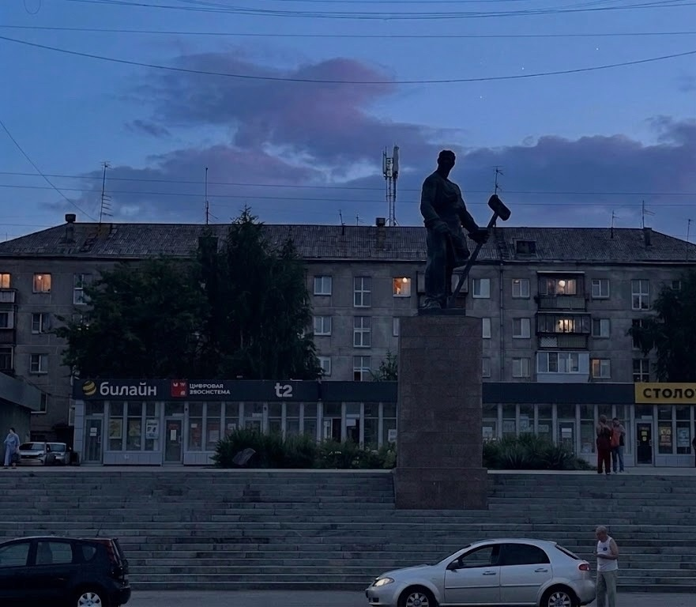
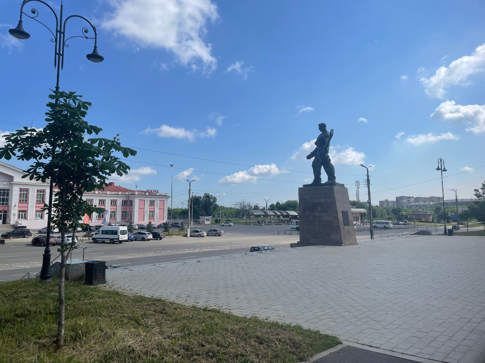

Выбор объекта
Навигация
Нажмите на карточку памятника, чтобы изучить официальную информацию и описание физической среды.
Городская антропология · 2026
Памятник «Тыл — Фронту»
Парк у Вечного огня. Кликните для просмотра информации.
Символ первостроителей
Памятник «Первая палатка»
Сквер Ветеранов Магнитки. Кликните для просмотра информации.
Символ профессии
Памятник «Металлург»
Привокзальная площадь. Кликните для просмотра информации.
Полевые материалы
Данные исследователей
Результаты масштабного опроса жителей и гостей Магнитогорска о восприятии городской исторической среды.
Выборка: n = 60 респондентовВопрос 4
С каким из трёх памятников в первую очередь ассоциируется Магнитогорск?
Вывод: «Тыл — фронту» — главный символ города в глазах опрошенных. Это подтверждает его центральную роль в городской идентичности.
Вопрос 5
Изменилось ли восприятие памятников за последние 10–20 лет?
Вопрос 1
Как часто вы бываете у следующих памятников?
| Памятник | Неск. раз в нед. | Неск. раз в мес. | Раз в неск. мес. | Раз в год и реже | Никогда |
|---|---|---|---|---|---|
| «Тыл — фронту» | 12 (20%) | 18 (30%) | 15 (25%) | 12 (20%) | 3 (5%) |
| «Металлург» | 6 (10%) | 10 (16,7%) | 14 (23,3%) | 20 (33,3%) | 10 (16,7%) |
| «Первая палатка» | 5 (8,3%) | 9 (15%) | 15 (25%) | 21 (35%) | 10 (16,7%) |
Вывод: «Тыл — фронту» посещают чаще всего — только 5% никогда там не бывают. У «Первой палатки» наоборот: 35% приходят раз в год или реже.
Вопрос 2
Основная причина присутствия у памятников
Вопрос 6
Какие действия чаще всего совершаете рядом с памятниками?
Вопрос 8
Устраивает ли вас инфраструктура вокруг памятников?
Вывод: 75% в целом довольны инфраструктурой. Скамейки, аллеи и благоустройство формируют повседневное использование пространства.
Вопрос 7
Как относитесь к тому, что люди забираются на постаменты или сидят на них?
Вопрос 3
Какие эмоции чаще всего испытываете у памятников?
Ваш вклад
Живой опросник
Помоги исследованию — ответь, что для тебя значат памятники города.
Помощь в заполнении
Твой ответ — часть полевого исследования.
- Постарайся вспомнить конкретные детали.
- Не бойся писать неформально, как в жизни.
- Если истории нет, расскажи про ощущения.
Живая память города
Открытые вопросы для глубинных интервью
Вопрос 1. Городские байки и личный опыт
Случалась ли с вами или вашими знакомыми необычная, смешная или трогательная история, связанная с одним из этих памятников? Поделитесь, пожалуйста. (Это может быть случайное знакомство, забавное происшествие, неожиданная встреча или что-то запоминающееся)
Вопрос 2. Атмосфера и чувства
Какие звуки, запахи или мелкие детали приходят вам на ум, когда вы вспоминаете эти места? Что вы обычно там чувствуете?
Главный символ
«Тыл — Фронту»
Парк у Вечного огня. Монумент, посвященный трудовому подвигу магнитогорцев.



Мемориальный комплекс «Тыл — Фронту»
ОКН федерального значения. Парк у Вечного огня. Открыт 28–29 июня 1979 года к 50-летию Магнитогорска.
Замысел
Идея монумента
Увековечить подвиг магнитогорцев: из стали ММК делали каждый второй танк и каждый третий снаряд. Рабочий передаёт воину меч.
Авторы
Кто создал
- Скульпторы: Л. Е. Кербель, Б. А. Дмитриев
- Архитекторы: А. Г. Митрофанов, Ю. Б. Лапин
Символика
Что изображено
- Рабочий передаёт воину меч из магнитогорской стали
- Рабочий смотрит на ММК, воин — на запад
Комплекс
Из чего состоит
- Вечный огонь, плиты с именами ~14 000 погибших
- Площадь торжеств, набережная Урала
Народная топонимика
Неофициальные названия
- парк за Континентом
- мужики с мечом / на ступеньках
- Меч Победы / Подержи, поссу
Физическая среда
Описание местности
Монумент «Тыл — фронту» расположен на возвышенности, поэтому его хорошо видно ещё из нижней части территории. К самому памятнику ведёт огромная широкая лестница. В её центральной части есть более высокие и широкие участки ступеней, на которых люди могут остановиться или посидеть, например, чтобы посмотреть на реку Урал и территорию ММК на противоположном берегу. По обе стороны от лестницы находятся травяные склоны.
Сам монумент стоит на большой открытой площадке. Пространство возле него практически ничем не перегорожено, поэтому к скульптуре можно подойти вплотную, обойти её с разных сторон или сфотографироваться рядом. С верхней площадки также хорошо открывается вид на реку и промышленную часть города, поэтому это место используется не только для посещения памятника, но и как обзорная точка.
Рядом с монументом расположены памятные плиты с фамилиями солдат Великой Отечественной войны. К ним также можно свободно подойти и прочитать фамилии. В центральной части комплекса находится отдельный мемориальный элемент со звездой. Территория вокруг достаточно большая: имеются мощёные площадки, дорожки, фонари, по краям растут деревья и находятся озеленённые участки. При этом непосредственно возле самого монумента пространство почти полностью открыто. Рядом нет лавочек и мусорных урн, поэтому для длительного отдыха место оборудовано слабо. Летом возле памятника также почти нет естественной тени.
Символ первостроителей
«Первая палатка»
Сквер Ветеранов Магнитки. Памятник тем, кто строил город в суровых условиях.


Мемориал «Первая палатка»
ОКН регионального значения. Расположен в сквере Ветеранов Магнитки. Открыт 9 мая 1966 года.
Замысел
Идея монумента
Увековечить подвиг первостроителей Магнитогорска. В начале 1930-х годов люди приезжали возводить город и комбинат, живя в суровых уральских условиях в простых брезентовых палатках.
Авторы
Кто создал
- Скульптор: Л. Н. Головницкий
- Архитектор: Е. В. Александров
Символика
Что изображено
- Стилизованная форма брезентовой палатки.
- Стихи Б. Ручьёва: «Мы жили в палатке с зеленым оконцем...»
Народная топонимика
Неофициальные названия
- Палатка / шалаш
- треугольник / палатка в парке
- каменная рука
Физическая среда
Описание местности
Памятник «Первая палатка» расположен практически у входа в парковую территорию, поэтому его легко заметить ещё при подходе к парку. Сам монумент установлен на невысокой плите, вокруг которой остаётся достаточно свободного пространства. К памятнику можно подойти с разных сторон, обойти его вокруг, рассмотреть надписи или сфотографироваться рядом.
Территория возле памятника хорошо озеленена. Вокруг находятся газоны, деревья и цветочные клумбы, которые отделяют площадку от остальной части парка и делают место более спокойным. Недалеко от монумента расположены удобные лавочки, поэтому посетители могут не только осмотреть памятник, но и задержаться рядом, посидеть или отдохнуть.
Через территорию проходят удобные пешеходные дорожки, которые дальше ведут в парк. При этом относительно близко находится автомобильная дорога, поэтому памятник остаётся хорошо доступным и заметным со стороны городской улицы. Пространство компактное и уютное, а наличие лавочек, зелени и цветов позволяет людям проводить возле памятника больше времени, а не только подойти, посмотреть и уйти.
Лицо города
«Металлург»
Привокзальная площадь. Монумент, встречающий всех гостей города металлургов.



Памятник «Металлург»
Один из главных символов Магнитогорска. Установлен на Привокзальной площади в 1970 году.
Замысел
Идея монумента
Скульптура создавалась для павильона СССР на Всемирной выставке в Брюсселе 1958 года как обобщённый монументальный образ советского рабочего-созидателя.
Авторы
Кто создал
- Скульптор: А. Е. Зеленский
- Архитектор постамента: В. Н. Богун
Символика
Что изображено
- Могучая фигура рабочего-сталевара в спецодежде.
- В руках — профессиональный инструмент.
Народная топонимика
Неофициальные названия
- мужик у вокзала
- сталевар
- мужик в фартуке
- Работяга
Физическая среда
Описание местности
Памятник «Металлург» расположен на возвышенной открытой площадке рядом с Привокзальной площадью. К нему ведёт широкая лестница, а сам памятник установлен на высоком постаменте, поэтому хорошо заметен издалека. Перед памятником и по его бокам достаточно много свободного пространства, к постаменту можно подойти вплотную, обойти его и рассмотреть с разных сторон. Непосредственно возле памятника нет ни лавочек, ни мусорных урн. Из-за этого территория больше подходит для короткой остановки, осмотра или фотографирования, чем для длительного отдыха.
При этом примерно в 50 метрах находится небольшая зелёная зона, где уже есть лавочки, урны и места, где можно посидеть. Сама территория вокруг памятника в основном открытая и мощёная. Рядом проходит дорога, находятся остановки общественного транспорта, парковочные места и здание вокзала.
Несмотря на близость вокзала, площадка памятника не является прямым проходом к нему: чтобы подойти к «Металлургу», человеку обычно нужно немного отклониться от основного маршрута и подняться по лестнице. Широкие ступени перед памятником также используются не только как проход. На них можно остановиться, присесть или подождать кого-то.